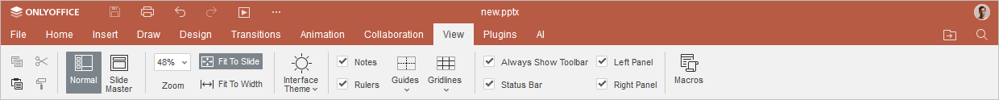
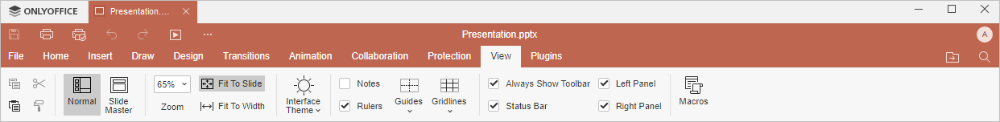

Kartica Prikaz
Kartica Prikaz u Presentation Editor-u omogućava upravljanje načinom na koji vaša prezentacija izgleda dok radite na njoj.
Odgovarajući prozor Online Presentation Editor-a:

Odgovarajući prozor Desktop Presentation Editor-a:

Opcije prikaza dostupne na ovoj kartici:
- Normalno – prelazak na normalan prikaz prezentacije i zatvaranje Slide Master režima.
- Slide Master – prelazak u prikaz glavnog slajda.
- Uvećanje omogućava uvećavanje i umanjivanje prikaza prezentacije.
- Prilagodi slajdu omogućava promenu veličine slajda tako da ceo slajd bude prikazan na ekranu.
- Prilagodi širini omogućava promenu veličine slajda tako da se slajd prilagodi širini ekrana.
- Tema interfejsa omogućava promenu teme interfejsa izborom opcija Isto kao sistem, Svetla, Klasična svetla, Tamna, Kontrastna tamna, Siva, Moderna svetla ili Moderna tamna.
Sledeće opcije omogućavaju podešavanje elemenata koji će biti prikazani ili sakriveni. Označite elemente da bi bili vidljivi:
- Beleške – da bi panel sa beleškama uvek bio vidljiv.
- Lenjiri – da bi lenjiri uvek bili vidljivi.
- Vodiči i Mrežne linije – za precizno pozicioniranje objekata na slajdu.
- Uvek prikaži traku sa alatkama – da bi gornja traka sa alatkama uvek bila vidljiva.
- Statusna traka – da bi statusna traka uvek bila vidljiva.
- Levi panel – da bi levi panel bio vidljiv.
- Desni panel – da bi desni panel bio vidljiv.
Dugme Makroi omogućava otvaranje prozora u kojem možete kreirati i pokretati sopstvene makroe. Da biste saznali više o makroima, pogledajte našu API dokumentaciju.